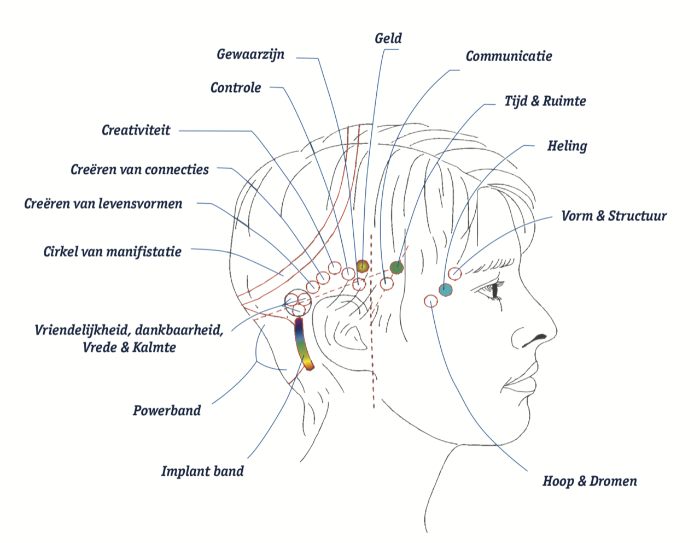

BARSWat zijn de Acces Bars?Dit is een energetisch lichaamsproces voor iedereen die meer rust, ruimte en ontspanning wil ervaren in geest en lichaam. STRESS RELIEF In de huidige maatschappij is het dikwijls broodnodig dat we weer een evenwicht vinden tussen inspanning en ontspanning. En ECHT ontspannen is soms moeilijker dan je denkt. Bij acces Bars maken we gebruik van 32 drukpunten die energiebanen vormen door en om het hoofd. Hierin liggen al je ideeën, gedachten, overtuigingen en emoties opgeslagen. En ieder drukpunt staat voor een specifieke context in je leven. Door deze punten, in verschillende combinaties zachtjes aan te raken, ontlaadt je alle informatie die daar ligt opgeslagen. Hierdoor ontstaat er meer rust in je hoofd, komt er ruimte en ontspanning in je lichaam en kan je nieuwe mogelijkheden creëren. Je haalt als het ware je eigen blokkades weg. Om het uit te leggen in mensentaal: je doet de grote lenteschoonmaak. Je ruimt het oude op en hebt plaats voor nieuwe dingen, een frisse wind door je hoofd, nieuwe aangename prikkels en emoties. Wake up and smell the roses 🌹, u komt beladen binnen en gaat ontspannen buiten!

Een sessie gaat steeds door na het maken van een afspraak en duurt
gemiddeld 1.5 uur.
|
|